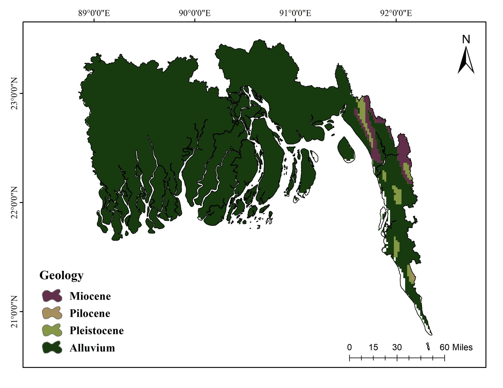
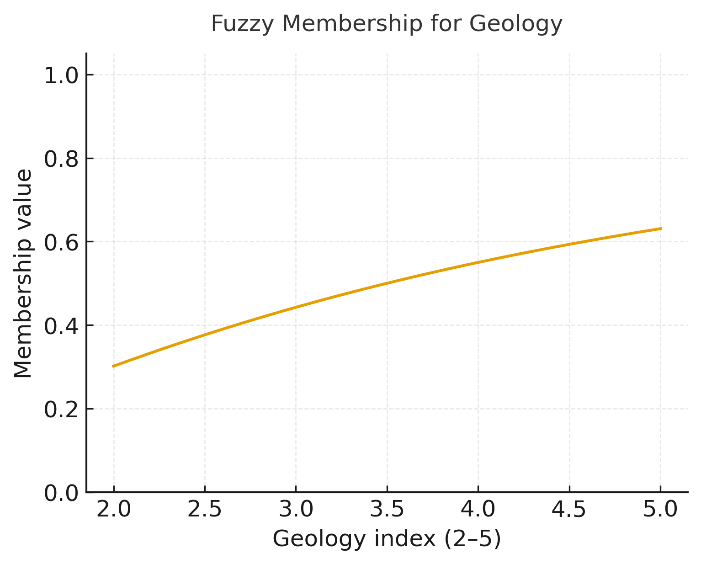
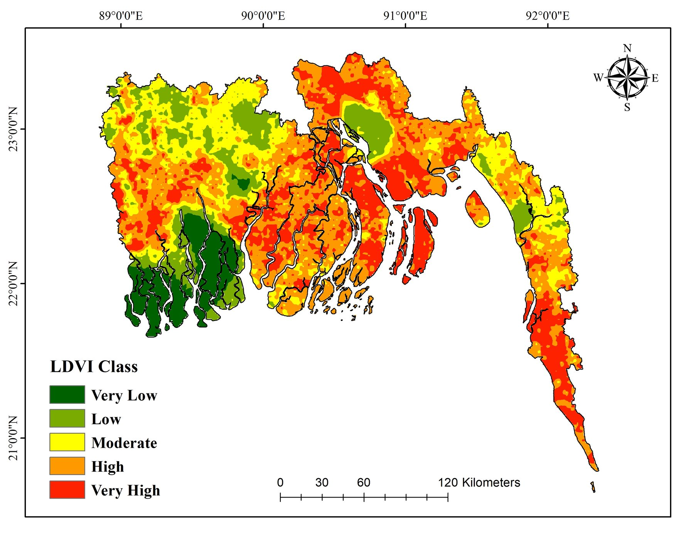
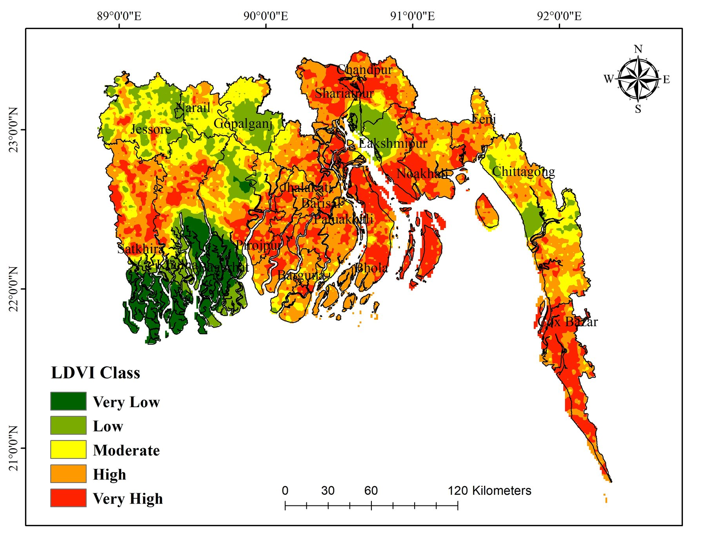
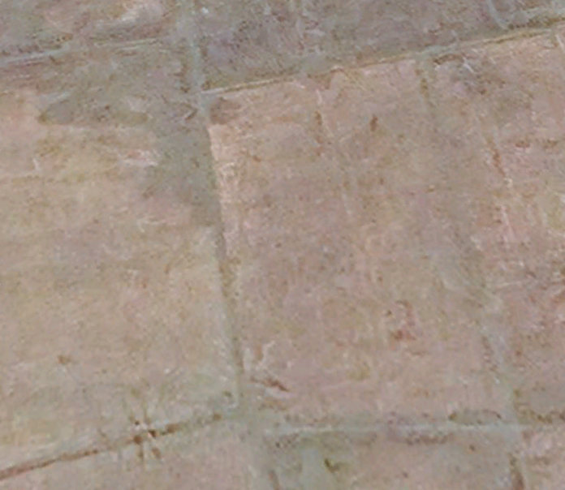
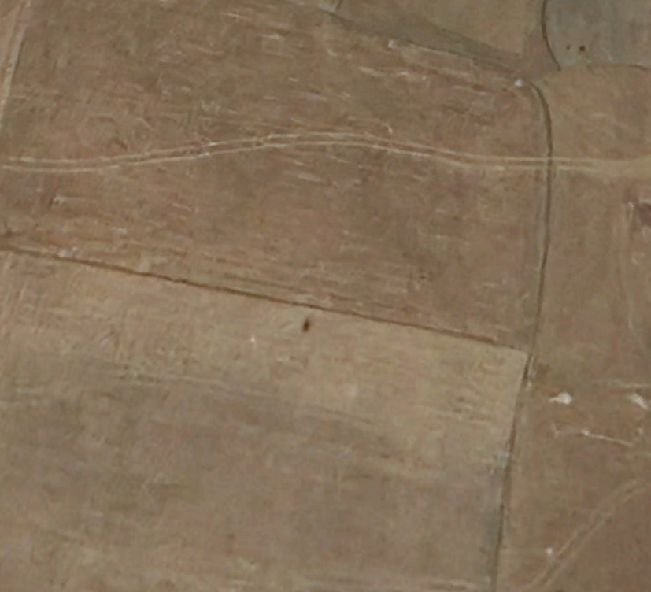

The LDVI surface can support identification of priority zones for soil conservation, salinity management and vegetation restoration across vulnerable coastal landscapes.
Working Paper · Manuscript in Preparation
↓Spatial Assessment of Land Degradation Vulnerability in Coastal Bangladesh
Using Remote Sensing and Fuzzy Expert System
Working PaperGIS & Remote SensingFuzzy Expert SystemCoastal BangladeshLand Degradation
About This Study
Land degradation is one of the most pressing environmental threats to coastal Bangladesh—a low-lying deltaic nation exposed to salinity intrusion, erosion, waterlogging and climate variability. Despite its severity, systematic spatial mapping of land degradation vulnerability across the coastal region remains limited.
This working study develops a Land Degradation Vulnerability Index (LDVI) for coastal and southern Bangladesh using a GIS-integrated fuzzy expert system. Eighteen environmental, soil, topographic, climatic and socioeconomic factors are synthesized through fuzzy membership modelling to produce a spatially continuous vulnerability surface.
The methodology adapts a fuzzy expert-system approach from remote-sensing literature to Bangladesh’s coastal context, shifting the analytical focus from flood inundation to the multidimensional problem of land degradation.
18conditioning factors
19districts in analysis
39,123 km²mapped study area
Study Area
The analysis covers 19 coastal and southern districts across the Chittagong, Dhaka and Khulna divisions: Bagerhat, Barguna, Barisal, Bhola, Chandpur, Chittagong, Cox Bazar, Feni, Gopalganj, Jashore, Jhalakati, Khulna, Lakshmipur, Narail, Noakhali, Patuakhali, Pirojpur, Satkhira and Shariatpur. Together, they encompass the Sundarbans fringe, the Meghna estuarine system and productive yet environmentally stressed agricultural plains.

Methodology
GIS-Based Fuzzy Expert System
The core analytical framework is a fuzzy expert system implemented in ArcGIS. Each conditioning factor was transformed into a standardized fuzzy membership surface using a Large or Small function, reflecting whether increasing or decreasing values indicate greater degradation vulnerability.
Parameters were calibrated for coastal Bangladesh’s environmental context, including salinity, monsoon rainfall, shallow groundwater and deltaic soil characteristics. The 18 fuzzy surfaces were combined using a conjunctive fuzzy overlay to produce the composite LDVI, which was classified as Very Low, Low, Moderate, High or Very High.
The 18 Conditioning Factors
Select a factor to compare its source map with the fuzzy membership response used to translate raw values into relative vulnerability.


Data Sources
| Factor | Source | Year |
|---|---|---|
| Geology | Energy & Mineral Resources Division, Bangladesh | 2020 |
| Soil Type | Bangladesh Agricultural Research Council (BARC) | 2020 |
| Soil Texture | Bangladesh Agricultural Research Council (BARC) | 2020 |
| Soil pH | Bangladesh Agricultural Research Council (BARC) | 2020 |
| Soil Organic Carbon (SOC) | FAO Global Soil Organic Carbon Map | 2017 |
| Elevation | USGS SRTMGL1_003 via Google Earth Engine | — |
| Slope | Derived from SRTM | — |
| TWI | Derived from SRTM | — |
| Rainfall | ERA5-Land Monthly Aggregated via GEE | 2015–2024 |
| Land Surface Temperature | MODIS MOD11A1 V6.1 via GEE | 2015–2024 |
| Groundwater Depth | Bangladesh Water Development Board | 2018–2022 |
| Distance from River | Local Government Engineering Department | 2020 |
| Salinity | Bangladesh Agricultural Research Council | 2021 |
| Erosion | European Soil Data Centre — Global Soil Erosion | 2019 |
| NDVI | Copernicus Sentinel-2 Harmonized via GEE | 2022 |
| NDMI | Copernicus Sentinel-2 Harmonized via GEE | 2022 |
| LULC | Esri Land Cover 10m / ESA WorldCover via GEE | 2021 |
| Population Density | WorldPop | 2020 |
Results & Key Findings


Area Statistics
District-Level Patterns
The district-level analysis reveals substantial spatial heterogeneity. Cox Bazar and Noakhali contain the largest shares of the study-wide Very High class, followed by Bhola and Satkhira; Chittagong and Patuakhali contain the largest shares of the High class. Bagerhat and Khulna, by contrast, also contain sizeable Very Low areas, demonstrating why district profiles should be read as mixed distributions rather than a single label.
Model Validation
The LDVI classification was evaluated through receiver operating characteristic analysis. Reference points for each vulnerability class were compared with the modelled surface to examine how consistently the classification distinguishes the five mapped categories. No summary accuracy statistic is reported here while the manuscript remains in preparation.

Validation by Class





Planning Implications
Fuzzy membership represents environmental degradation as a gradient rather than a hard boundary, making the result suitable for integration with socioeconomic vulnerability and climate-risk layers.
Future work can assess change through time and connect LDVI with crop-suitability modelling to support climate-adaptive agricultural planning.
Methodological Reference
Alam, K. F., & Ahamed, T. (2023). Climate-Adaptive Potential Crops Selection in Vulnerable Agricultural Lands Adjacent to the Jamuna River Basin of Bangladesh Using Remote Sensing and a Fuzzy Expert System. Remote Sensing, 15(8), 2201. https://doi.org/10.3390/rs15082201